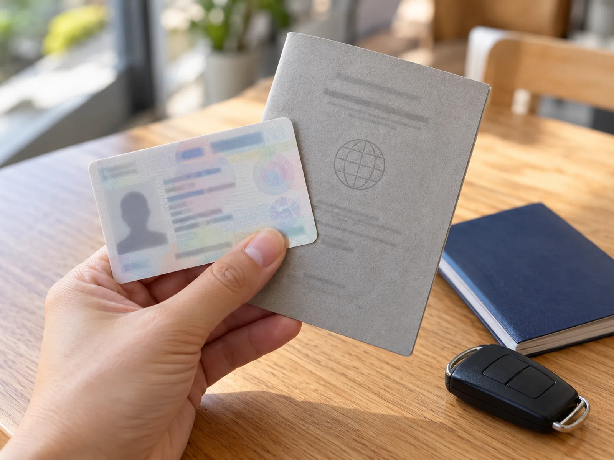
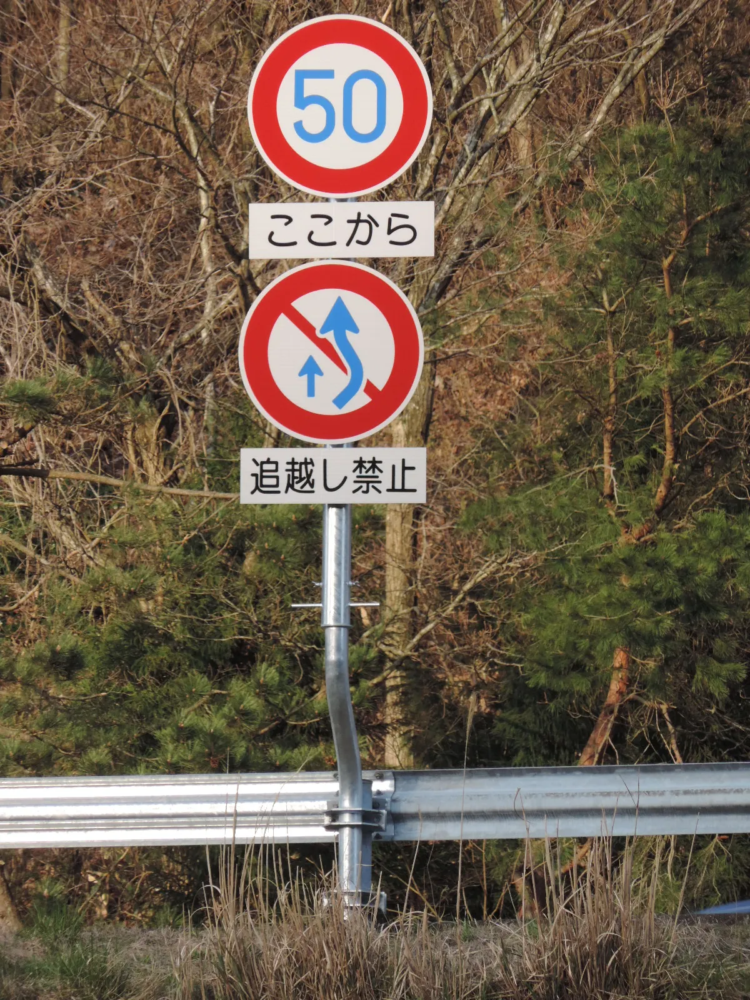
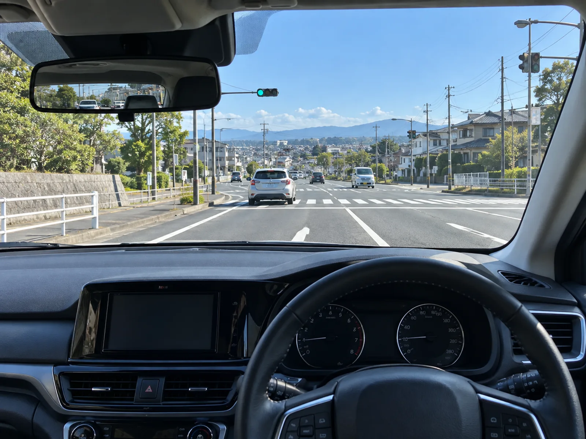
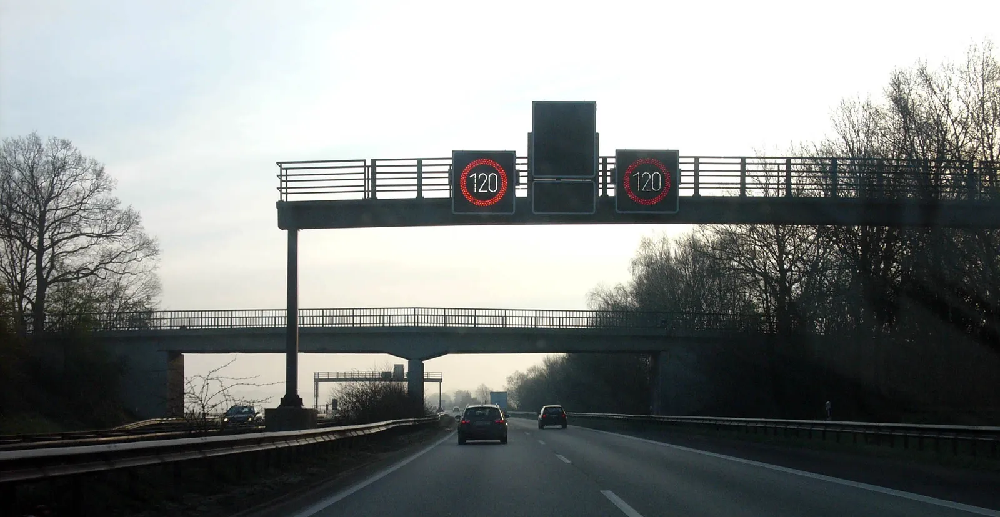

▲ 인천공항 입국장(자료 사진) ⓒ AirportTerminalGuy, CC BY 4.0, Wikimedia Commons
"국제운전면허증만 있으면 어디서든 운전할 수 있는 거 아니에요?" 연말 해외여행을 앞두고 가장 많이 나오는 오해다. 국제운전면허증은 한국 면허증의 '번역본'이 아니라, 제네바협약 등에 따라 한국 면허를 근거로 발급되는 별도 문서이고, 어느 나라에서 얼마나 통하는지는 나라마다 다르다.
이 글은 도로교통공단과 외교부 공식 안내를 기준으로 발급 절차와 비용을 정리하고, 일본·미국·유럽 세 지역을 같은 항목으로 비교했다. 기준일은 2026년 10월 2일이며, 수수료와 인정 국가 수는 바뀔 수 있으니 출국 전 공식 사이트에서 다시 확인해야 한다.
1. 국제운전면허증 발급 — 어디서, 무엇을 들고, 얼마에
도로교통공단 안전운전 통합민원 안내에 따르면 발급 장소는 전국 운전면허시험장과 경찰서, 인천공항·김해공항 국제운전면허 발급센터이며, 여권 신청 때 함께 신청할 수 있는 협약 지자체도 있다. 온라인 신청도 가능하지만 일일 접수 건수에 제한이 있다.
| 항목 | 내용 | 비고 |
|---|---|---|
| 발급 장소 | 전국 운전면허시험장·경찰서, 인천·김해공항 발급센터, 협약 지자체(여권 동시 신청), 온라인 | 도로교통공단 안내 |
| 준비물(본인) | 여권(사본 가능), 운전면허증, 6개월 이내 촬영한 여권용 사진 1매(3.5×4.5cm) | 영문 이름이 여권과 일치해야 함 |
| 준비물(대리) | 위 서류 + 대리인 신분증 원본 + 위임장 | — |
| 수수료 | 현장 9,000원(공단 안내 페이지 기준) | 과거 보도자료에는 8,500원 표기 — 방문 전 확인 필요 |
| 온라인 비용 | 발급비 + 등기우편료(보도자료 당시 합계 12,300원) | 현재 금액은 확인 필요 |
| 유효기간 | 발급일로부터 1년 | 면허 갱신 주기와 무관 |
| 발급 제한 | 미납 과태료·범칙금이 있으면 발급 제한 | 출국 전 납부 먼저 |
📍 수수료 숫자가 두 개인 이유
공단 보도자료(온라인 비대면 발급 안내)에는 발급비 8,500원과 등기우편료 3,800원 합계 12,300원이 적혀 있고, 현재 안내 페이지에는 9,000원이 표기돼 있다. 발급비가 조정됐을 가능성이 있지만 변경 시점은 확인하지 못했다. 이 글은 현재 페이지 기준 9,000원을 본문 수치로 쓰되 8,500원~9,000원 범위로 보고 현장에서 확인하길 권한다.
2. 온라인 신청과 현장 발급, 일정은 이렇게 짠다
온라인 비대면 신청은 안전운전 통합민원에서 본인인증 후 여권용 사진 파일을 올리면 되고, 보도자료 기준 신청 후 약 5일 이내 등기 발송이다. 출국이 임박했다면 현장 발급이 안전하다. 연말·연휴 직전에는 공항 센터와 시험장이 붐빌 수 있어 출국 최소 일주일 전에 처리하는 편이 좋다(카프리즘 권장).
| 구분 | 현장(시험장·경찰서) | 공항 센터 | 온라인 |
|---|---|---|---|
| 소요 | 당일 수령(통상, 확인 필요) | 당일 수령(통상, 확인 필요) | 약 5일 + 우편(보도자료) |
| 적합한 경우 | 일정 여유 있는 거주지 근처 | 출국 당일 급할 때 | 방문 시간이 없을 때 |
| 주의 | 운영시간·휴무 확인 | 공항까지 가는 동선 확인 | 일일 접수 제한, 수령지 주소 오기재 |
| 준비물 | 사진 지참 필수 | 동일 | 사진 파일 + 본인인증 |
✅ 출국 전 체크
· 여권 영문 이름과 한국 면허증 정보가 일치하는지 확인
· 국제면허증 1년 유효이므로 연초 재출국 일정이 있다면 한 장으로 해결 가능
· 국내 면허 갱신 기간이 임박했다면 먼저 처리 — 절차는 운전면허 갱신 가이드에서 정리했다
· 해외 공관에서는 국제면허증을 발급할 수 없으므로 반드시 한국에서 출국 전 발급(재외공관 공지)
3. 어느 나라에서 통하나 — 제네바협약·비엔나협약·한국면허 직접 인정
인정 체계는 크게 세 갈래다. ① 1949년 제네바협약 가입국에서는 협약 양식 국제면허증이 통한다. 도로교통공단은 제네바협약국 103개국과 협약국이 아닌 대만·베트남에서 사용 가능하다고 설명했다(보도자료 시점 기준). ② 1968년 비엔나협약 가입국은 협약 종류가 달라 양식이 통하지 않는 경우가 있다. ③ 한국 면허의 직접 인정은 나라가 한국 면허증을 자국 면허로 교환·인정하는 제도로, 외교부 해외안전여행 사이트는 133개국·지역(2026년 8월 기준)으로 안내한다.

▲ 국제면허증은 한국 면허증·여권과 함께 지참해야 한다(예시 이미지, 면허증 내용은 식별 불가 처리) ⓒ CarPrism (AI 생성 이미지)
| 구분 | 의미 | 한국 운전자가 알아둘 점 |
|---|---|---|
| 제네바협약(1949) | 협약 양식 국제면허증 상호 인정 | 일본 등 주요 여행지가 해당. 면허증에 협약 연도 표기 |
| 비엔나협약(1968) | 협약 가입국 간 면허 인정 방식 | 협약 종류가 달라 발급 양식이 안 통하는 나라도 있어 확인 필요 |
| 한국면허 직접 인정 | 국내 면허로 교환·운전 허용(133개국·지역, 2026년 8월 외교부) | 체류 요건·범위는 국가별 상이(예: 말레이시아 제한 인정). 관광 단기 렌터카 허용과는 다른 개념 |
| 협약 불문 현지법·회사 정책 | 번역공증·영문면허 요구 등 | 렌터카사 정책이 법보다 엄격한 경우가 있음 |
📍 "한국 면허 인정국"이면 국제면허가 필요 없나
외교부의 상호인정은 주로 그 나라에 거주하는 우리 국민이 시험 없이 면허를 교환하는 제도다. 짧은 여행에서 한국 면허만으로 렌터카를 빌릴 수 있는지는 별개이므로 국가별 대사관과 렌터카사의 조건을 따로 확인해야 한다.
4. 일본·미국·유럽 — 같은 항목으로 비교해 봤다
일본은 좌측통행이라는 점에서 한국 운전자가 체감하는 차이가 가장 크다. 주일 공관 공지는 일본에서 운전하려면 국제운전면허증이 필요하다고 안내한다. 한편 미국·유럽은 나라(주)마다 법과 렌터카사 정책이 다르다.
▲ 일본 도로 표지는 일본어 보조표지가 많아 미리 익혀 둘 필요가 있다 ⓒ Sgroey, CC BY-SA 4.0, Wikimedia Commons
| 항목 | 일본 | 미국 | 유럽 |
|---|---|---|---|
| 통행 방향 | 좌측, 렌터카는 우핸들 | 우측, 좌핸들 | 대부분 우측(영국·아일랜드·몰타·키프로스는 좌측) |
| 국제면허 요건 | 제네바협약 국제면허 필수(공관 공지). 국제면허는 발급일로부터 1년, 일본은 입국일부터 1년 이내 조건(지방경찰 자료) | 주별·렌터카사별로 상이(법적 의무 여부는 주 정부 확인 필요) | 국가별 상이(제네바·비엔나 혼재, 확인 필요) |
| 함께 지참 | 국제면허증·한국 면허증·여권 | 국제면허(권장)·한국 면허·여권 | 국제면허·한국 면허·여권 |
| 영문 운전면허증 | 일본 렌터카에서 사용 불가로 안내 | 렌터카사별 확인 필요 | 국가별 확인 필요 |
| 보험 특징 | CDW·휴차보상(NOC) 등 일본식 옵션 | SLI·LDW·PAI 등 선택 폭 큼 | TP·CDW 포함 여부와 면책금 회사별 확인 필요 |
| 주의 포인트 | 방향 감각 반대, 일시정지 표지(止まれ) | 주마다 속도제한·휴대폰 규정 다름 | 속도카메라, 도심 환경구역, 톨 제도 |
📍 일본 무면허 처벌 안내
주일 공관과 일본 렌터카 업계 안내에 따르면 국제면허 없이 운전하면 무면허로 처벌받을 수 있고, 일부 안내에는 3년 이하 징역 또는 50만 엔 이하 벌금이 언급된다. 구체 처벌 수위는 일본 경찰청·공관 공지에서 확인 필요하다.

▲ 일본의 추월금지 표지. 모양이 비슷해도 보조표지 문구를 읽어야 한다 ⓒ 運動会プロテインパワー, CC BY-SA 4.0, Wikimedia Commons
5. 해외 렌터카 보험 — CDW·LDW·SLI·TP, 면책금이 핵심이다
해외 렌터카 보험 용어는 회사마다 명칭과 보장 범위가 다르다. 일반적으로 쓰이는 정의는 다음과 같다. CDW(Collision Damage Waiver)는 차량 파손 시 수리비 책임을 면제하되 자기부담금(면책금)을 남기는 옵션이고, LDW는 충돌과 도난을 함께 다루는 경우가 많다. TP(Theft Protection)는 도난, SLI(Supplemental Liability Insurance)는 제3자 대인·대물 손해를 추가로 보장하는 책임보험이다.
▲ 렌터카 카운터에서는 보험 옵션과 면책금 설명을 서면으로 확인한다(예시 이미지) ⓒ CarPrism (AI 생성 이미지)
| 용어 | 의미 | 한국 운전자가 확인할 것 |
|---|---|---|
| CDW | 차량 파손 수리비 면책(자기부담금 남음) | 면책금 금액, 타이어·유리·하부 제외 여부 |
| LDW | CDW + 도난·전손 포함 개념 | 회사별 포함 범위 상이 |
| TP | 도난 보장 | 기본 포함이면 면책금만 확인 |
| SLI | 제3자 책임 한도 확대(미국에서 특히 중요) | 기본 책임 한도가 낮을 수 있음 — 한도 금액 확인 |
| PAI/PEC | 탑승자 상해·소지품 | 해외여행자보험과 중복 여부 |
| NOC(일본) | 사고로 영업 중단 시 청구되는 휴차 보상 성격 비용 | CDW와 별도 가입인지 확인 |
국내 렌터카 사고에서도 면책금과 휴차료가 따로 청구되는 구조는 같다. 자세한 내용은 렌터카 사고의 두 번째 청구서와 렌터카 사고 보상 가이드에서 확인할 수 있다.
카프리즘의 가정형 계산 — 아래 금액은 실제 요금이 아니라 계산 구조를 보여주는 가정값이다. 계산식: 면책금 면제 옵션 총액 = 일 요금 D × 일수 N. 사고확률 p × 면책금 C > 옵션 총액이면 가입이 이득이다. 즉 p가 (옵션 총액 ÷ 면책금 C), 아래 예시로는 10.5%를 넘으면 가입이 유리하다. 이 계산은 면제 옵션이 면책금을 전액 없애는 경우에만 성립하며, 부분 면제나 NOC 별도 청구는 반영하지 않았다.
| 항목 | 가정(예시) | 계산 |
|---|---|---|
| 면책금 C | 100만 원 | 가정 |
| 면제 옵션 일 요금 D | 1.5만 원 | 가정 |
| 대여 일수 N | 7일 | 가정 |
| 옵션 총액 | 10.5만 원 | 1.5만 × 7 |
| 손익분기 사고확률 | 약 10.5% | 10.5만 ÷ 100만 — 이 확률을 넘으면 가입 유리(추정치) |
✅ 카운터에서 반드시 확인할 5가지
· 면책금(자기부담금) 금액과 면책 제외 항목(타이어·유리·하부·열쇠 분실)
· 제3자 책임 한도와 SLI 필요 여부(특히 미국)
· 신용카드·여행자보험의 렌터카 보장 여부와 중복 가입 여부
· 연료 정책(가득 반납), 편도 반납 수수료, 톨 결제 방식
· 사고·고장 시 연락처와 24시간 지원 번호
6. 현지 교통법규, 좌측통행과 우측통행에서 달라지는 것
좌측통행 국가(일본·영국·아일랜드·호주 등)에서는 핸들이 오른쪽이고 방향지시등·와이퍼 레버 위치가 반대인 차가 많다. 교차로에서 진입 차로를 반대로 인식해 역주행하는 사고 위험이 있으므로 초반에는 보수적으로 운전해야 한다. 우측통행 국가에서도 속도제한 단위(마일), 우회전 신호 등 규정이 다르다.

▲ 좌측통행 국가의 렌터카는 핸들이 오른쪽에 있다(예시 이미지) ⓒ CarPrism (AI 생성 이미지)

▲ 독일 고속도로 구간의 가변 속도제한 표지. 무제한 구간만 있는 것은 아니다 ⓒ Hannes Grobe, CC BY 3.0, Wikimedia Commons
▲ 미국 고속도로는 출구 번호 체계와 공사 구간 속도제한이 중요하다 ⓒ Dougtone, CC BY-SA 2.0, Wikimedia Commons
| 항목 | 좌측통행(일본 등) | 우측통행(미국·유럽) |
|---|---|---|
| 차로 진입 | 교차로 우회전이 대향 차로 횡단 | 우회전 시 보행자·자전거 우선(주별 상이) |
| 속도 단위 | km/h(일본) | 미국 mph, 유럽 km/h |
| 신호·표지 | 일본어 표지, 止まれ=일시정지 | 미국 STOP, 유럽 국가별 표지 |
| 주차·정차 | 국가·지역별 단속 규정 확인 | 미국 소화전·청소일, 유럽 구역 주차 |
| 음주운전 | 국가별 한도 확인 필요 | 미국 주별, 유럽 국가별 상이(확인 필요) |
📍 낯선 길 사고는 한국에서도 똑같다
도로교통공단의 휴가철 사고 분석에서도 타 지역 운전자의 사고 증가가 확인됐다. 해외에서는 낯선 길에 법규까지 달라지므로 위험이 더 커진다. 관련 통계는 휴가철 외지인 운전자 사고 통계에서 정리했다.
7. 사고가 났을 때 — 영사콜센터와 현지 대응 순서
외교부 영사안전콜센터는 연중무휴 24시간 운영되며, 국내 02-3210-0404, 해외 +82-2-3210-0404로 이용할 수 있다. 무료전화 앱과 카카오톡·라인·위챗 상담도 안내돼 있고, 영어·중국어·일본어·베트남어·프랑스어·러시아어·스페인어 통역 서비스가 제공된다.
▲ 사고·고장 시에는 비상등을 켜고 안전 삼각대를 설치한 뒤 렌터카사에 연락한다(예시 이미지, 국가별 의무 여부는 확인 필요) ⓒ CarPrism (AI 생성 이미지)
| 순서 | 행동 | 메모 |
|---|---|---|
| 1 | 안전 확보, 부상자 확인, 현지 긴급번호 신고 | 국가별 번호 상이 |
| 2 | 렌터카사 긴급 연락처에 즉시 통보 | 계약서·키 홀더에 번호 기재 |
| 3 | 현장 사진, 상대 차량 번호·보험 정보 확보 | 경찰 사고확인서(보고서 번호) 받기 |
| 4 | 대형 사고·분쟁이면 영사안전콜센터 연락 | 통역·안내 지원(법률 대리 아님) |
| 5 | 귀국 후 여행자보험·카드 보장 청구 | 영수증·서류 보관 |
✅ 출발 전 휴대폰에 저장할 것
· 영사안전콜센터 +82-2-3210-0404와 무료전화 앱 설치
· 렌터카사 긴급 번호, 보험 증서, 예약 확인서
· 국제면허증·한국 면허증·여권 사진본(원본 지참은 필수, 사본은 보조)
8. 요약
국제운전면허증은 출국 전에 한국에서 발급받아야 하고, 유효기간은 1년이다. 현장 발급 수수료는 공단 안내 기준 9,000원이지만 과거 자료에 8,500원 표기도 있어 방문 전 확인이 필요하다.
일본은 제네바협약 국제면허가 필수이고 좌측통행이며, 미국은 주별·렌터카사별 조건이 다르고, 유럽은 국가별로 인정 협약이 갈린다. 한국 면허 직접 인정 133개국·지역(2026년 8월 외교부)은 거주자 교환 중심의 개념이라 관광 렌터카 가능 여부와 별개다.
렌터카는 CDW·SLI·TP 용어와 면책금 금액을 예약 단계에서 확인하고, 사고 시에는 렌터카사와 영사안전콜센터(+82-2-3210-0404)에 연락하는 순서로 준비하자. 이 글의 비용 계산은 가정값이며 실제 요금과 정책은 각 공식 사이트에서 확인해야 한다.